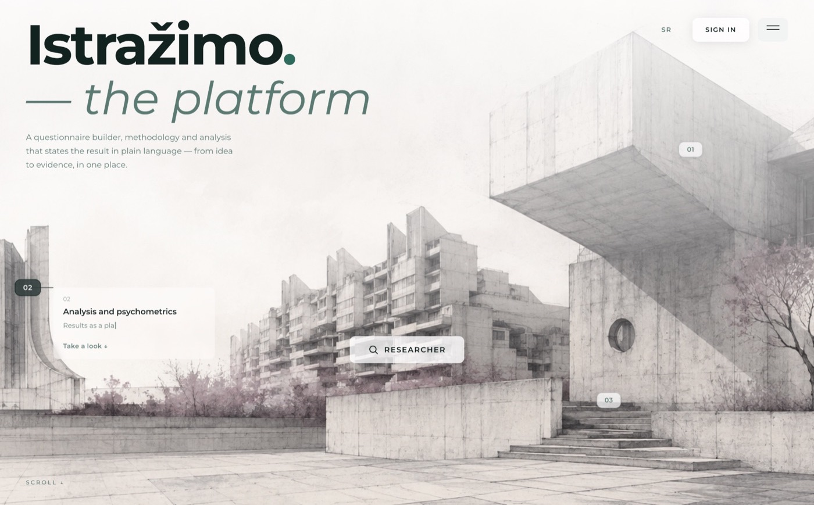
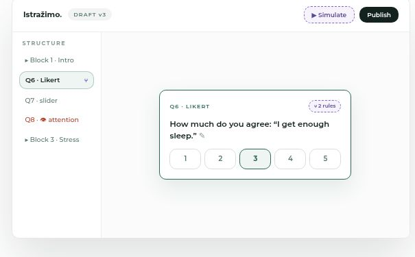
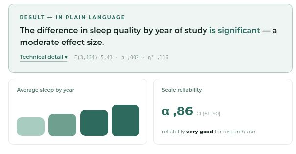

Case study · Research platform
Istražimo.
A research platform for designing studies, collecting responses and analysing results.
In useCurrently supporting a live study with deaf participants.

+ logic.
+ responses.
+ export.
From study design to participation.
I built study design, consent, participation and analysis into one workflow, with support for sign-language videos. Published question versions keep answers connected to their original context.
Tie each response to a published instrument version, and keep that link through the main results and export workflow.
- Integrity
Saves in sequence.
- Responsibility
Access with boundaries.
- Interpretation
Statistics in context.
Engineering notes
Queued saves and stale-update rejection protect newer answers. Shared branching rules remove answers outside the current path; completion waits for server confirmation.
Study editing, aggregate analysis and raw responses have separate permissions. Participants give explicit consent; researchers retain control over collaboration.
Descriptive statistics, Welch’s t-test, Cohen’s d and Cronbach’s alpha support analysis. Reliability includes item selection and sample limitations; it does not establish construct validity.


Also built: scales, matrices, ranking, uploads, invitations, question-level comments, bilingual workflows, CSV/codebooks and SPSS import syntax. Panel and pilot features have rollout restrictions.